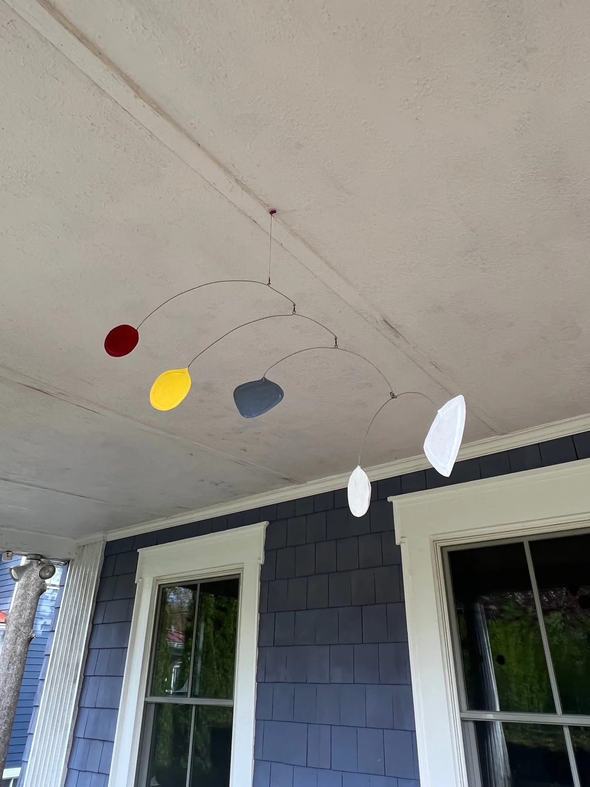

1 / 2
Simple Mobiles
Color Line
A light horizontal mobile punctuated by red, yellow, blue, white, and gray shapes that drift independently along fine arcs.
Contact for priceAvailability on request
Inquire